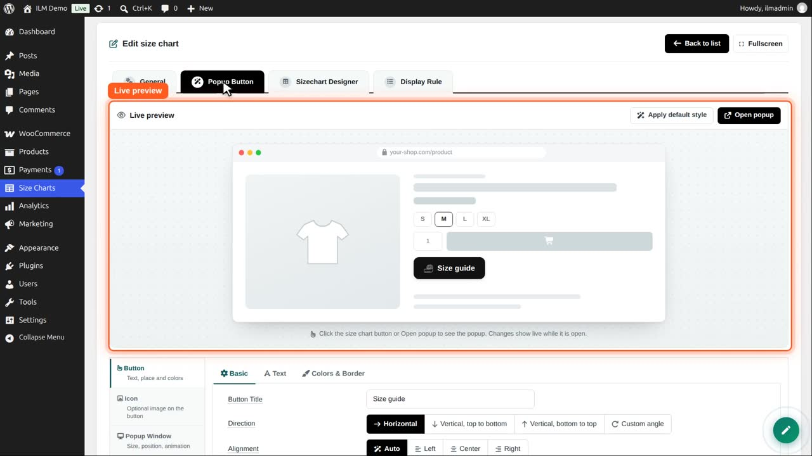
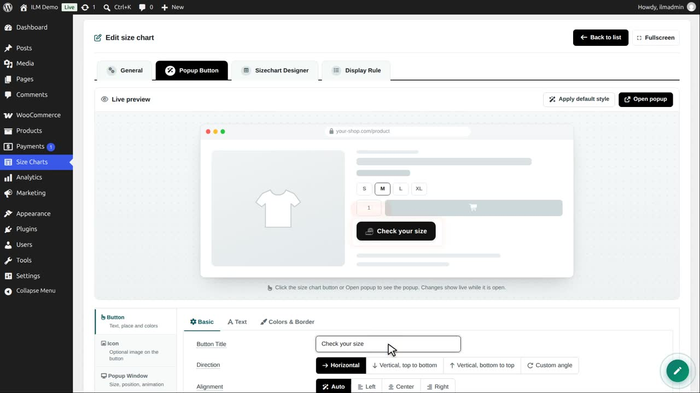
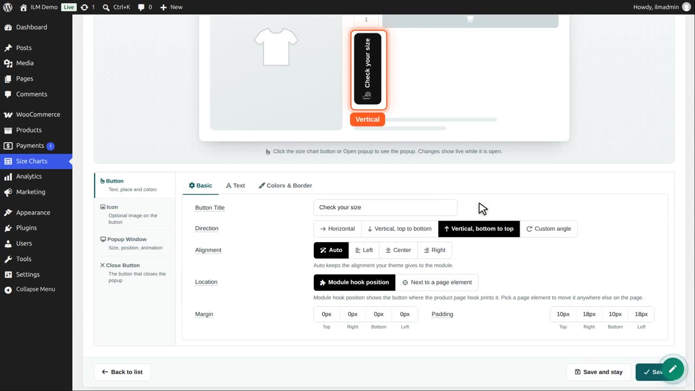
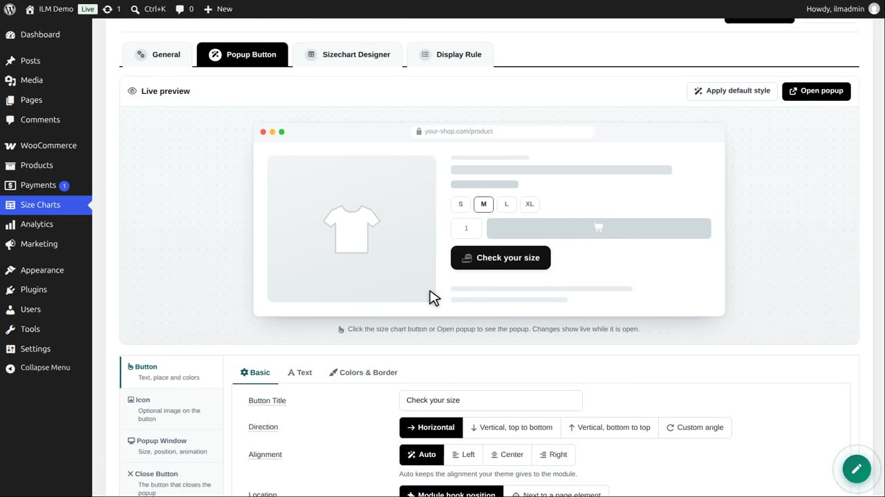
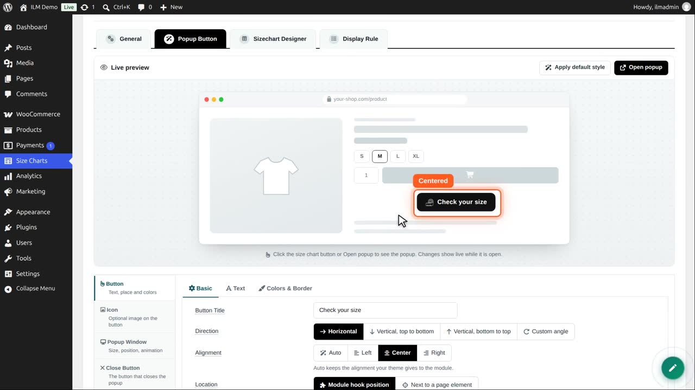
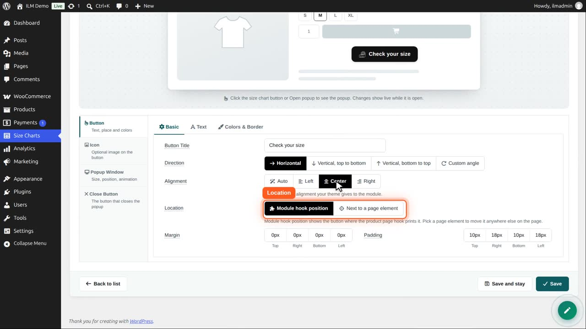
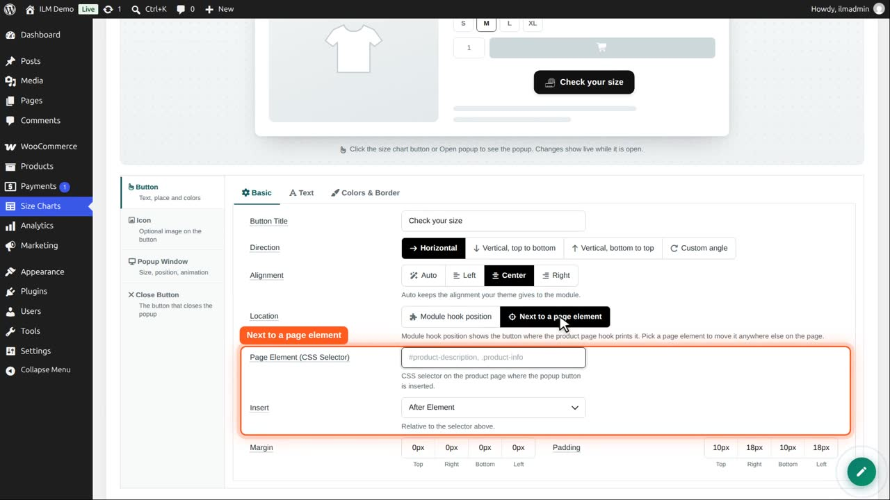
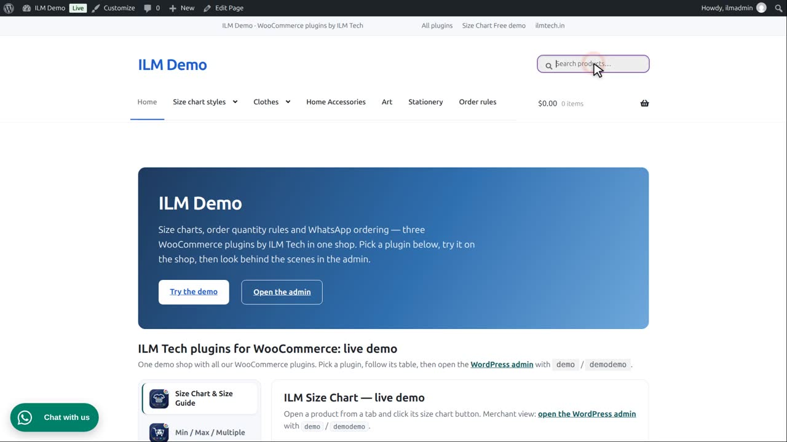
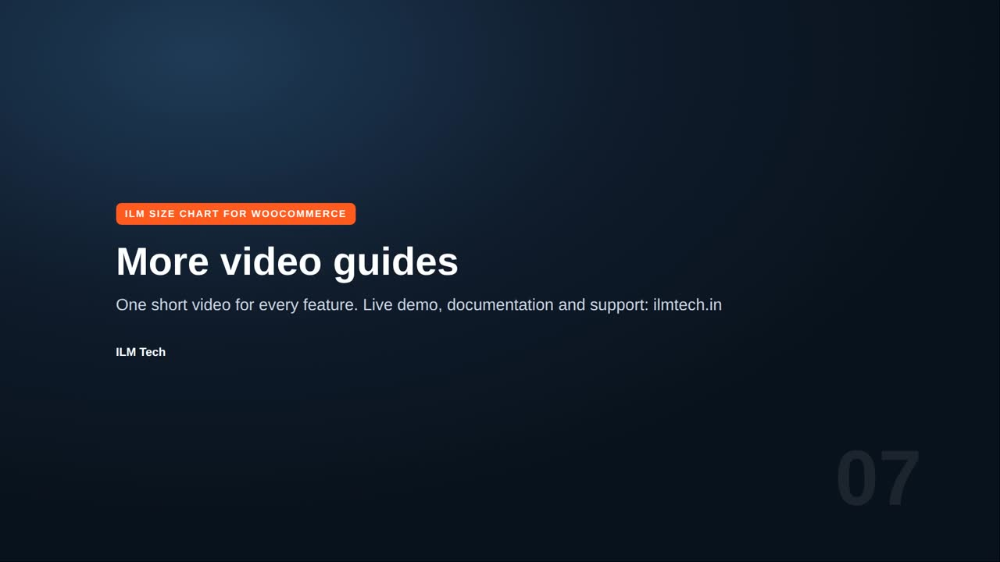

Edit a chart and open the Popup Button tab. At the top is a live preview: a sample product page with your button. Every change shows there at once.

In Button, Basic, type the button title. We write: Check your size. Leave it empty to show only the icon.

Direction turns the button on its side, like a tab on the edge of the page. Vertical, bottom to top.

We go back to Horizontal, the usual look.

Alignment places the button left, center or right in its row. Auto keeps what your theme does. We choose Center.

Location: Module hook position shows the button where the product page prints the plugin, near add to cart.

Next to a page element moves it anywhere: type a CSS selector of your theme, and choose before or after it. We keep the hook position for now.

Margin is the space around the button, padding the space inside it, for top, right, bottom and left.

Save and stay, then open the product in the shop. The button has its new title, and it is centered.
